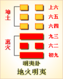

<!DOCTYPE html PUBLIC "-//W3C//DTD XHTML 1.0 Transitional//EN" "http://www.w3.org/TR/xhtml1/DTD/xhtml1-transitional.dtd">

<html xmlns="http://www.w3.org/1999/xhtml">
<head>
<meta content="text/html; charset=utf-8" http-equiv="Content-Type"/>
<title>周易第三十六卦：明夷�?地火明夷 坤上离下原文解释翻译-周易-国学�?/title>
<meta content="周易,明夷�?地火明夷,坤上离下" name="keywords"/>
<meta content="周易,明夷�?地火明夷,坤上离下，周易第三十六卦：明夷卦 地火明夷 坤上离下解释翻译�?（离下坤上）明夷，利艰贞�?初九：“明夷于飞，垂其翼。君子于行，三日不食。”有攸往�?主人有言�?六二：明夷，夷于左股，用拯马壮。吉�?九三：明夷于南狩，得其大首。不�? name="description"/>
<link href="css.css" media="screen" rel="stylesheet" type="text/css"/>
</head>
<body>
<div class="gxlayout">
</div>
<div class="gxlayout">
<div class="ihead">
<div class="title"><a>周易</a></div>
<ul class="more fl">
<li>当前位置:<a>国学梦首�?/a> &gt; <a>国学经典</a> &gt; <a>经部</a> &gt; <a>四书五经</a> &gt; <a>周易</a> &gt;  周易第三十六卦：明夷�?地火明夷 坤上离下原文解释翻译</li>
</ul>
</div>
<div class="gxbl fl">
<div class="latitle">

<h1>周易第三十六卦：明夷�?地火明夷 坤上离下</h1>
<div class="lainfo"><span>作者：佚名</span> <span>全集�?a>周易</a></span> <span>来源：网�?/span> <span>[<a rel="nofollow" target="_blank">挑错/完善</a>]</span></div>
</div>
<div class="lacontent">
<div class="clearfix"></div>
<!--<!-- allowfullscreen="" frameborder="0" height="36" src="http://www.ximalaya.com/swf/sound/yellow.swf?id=1382599&amp;auto=true" width="260"></iframe>-->
<p style="text-align:center"></p>
<p style="text-align:center"><a>周易第三十六卦详�?/a></p>
<p style="text-align:center"><a>第三十六卦初九爻详解</a>　<a>第三十六卦六二爻详解</a>　<a>第三十六卦九三爻详解</a></p>
<p style="text-align:center"><a>第三十六卦六四爻详解</a>　<a>第三十六卦六五爻详解</a>　<a>第三十六卦上六爻详解</a></p>
<p><strong><a target="_blank">周易</a>第三十六�?明夷 地火明夷 坤上离下</strong></p>
<p>明夷：利艰贞�?彖曰：明入地中，明夷。内文明而外柔顺，以蒙大难，文王以之。利艰贞，晦其明也，内难而能正其志，箕子以之�?/p>
<p>象曰：明入地中，明夷;君子以莅众，用晦而明�?/p>
<p>初九：明夷于飞，垂其翼。君子于 行，三日不食，有攸往，主人有言。象曰：君子于行，义不食也�?/p>
<p>六二：明夷，夷于左股，用拯马壮，吉。象曰：六二之吉，顺以则也�?/p>
<p>九三：明夷于南狩，得其大首，不可疾贞。象曰：南狩之志，乃大得也�?/p>
<p>六四：入于左腹，获明夷之心，出于门庭。象曰：入于左腹，获心意也�?/p>
<p>六五：箕子之明夷，利贞。象曰：箕子之贞，明不可息也�?/p>
<p>上六：不明晦，初登于天，后入于地。象曰：初登于天，照四国也。后入于地，失则也�?/p>
<p><strong><a href="36_明夷�?html" target="_blank">明夷�?/a>卦象，地火明夷卦的象征意�?/strong></p>
<p>明夷卦是异卦相叠，下卦为离，上卦为坤。离为明，坤为顺;离为日，坤为地。日没入地，光明受损，前途不明，环境困难。施于人事，则为暗主在上，明臣在下，而不敢显其明智之谓也。宜遵时养晦，坚守正道，外愚内慧，韬光养晦，以避小人之害�?/p>
<p>明夷卦位�?a href="35_晋卦.html" target="_blank">晋卦</a>之后，与晋卦为正覆卦。《序卦》说：“进必有所伤，故受之以明夷。夷者，伤也。”晋升或前进之中难免有所损伤，所以接着出现了明夷卦，意指光明受到伤害。程颐这样解释明夷卦与晋卦的区别：“晋者明盛之卦，明君在上，群贤并进之时也。明夷昏暗之卦，暗君在上，明者见伤之时也。�?/p>
<p>《象》中这样解释明夷卦：明入地中，“明夷�?君子以莅众，用晦而明�?/p>
<p>《象》中指出：明夷卦的卦象是�?�?下坤(�?上，离为火，代表光明，为光明入地下之表象，象征着“光明被阻”。君子要能够遵循这个道理去管理民众，即有意不表露自己的才能和智慧，反而能在不知不觉中使民众得到治</p>
<p>明夷卦象征光明受阻，属于中下卦。《象》中对此卦的评断是：时乖运拙走不着，急忙过河拆了桥，恩人无义反为怨，凡事无功枉受劳�?/p>
<p>【明夷卦卦象，地火明夷卦的象征意义释义�?/p>
<p>此卦卦名为明夷。夷是夷毁、受伤的意思。明夷就是光明受损受伤之意。前面以天空中的太阳比喻晋升，可是太阳不会永远停在天空中，也有日落的时候，所以晋卦的后面是明夷。其引申义则是说明人生不可能永远晋升顺利，也有受伤害的时候。所以《序卦传》中说：“进必有所伤，故受之以明夷。�?/p>
<p>明夷卦卦<a target="_blank">�?/a>：明夷卦的卦画为两个阳爻四个阴爻，卦画的排列顺序正好与晋卦相反，明夷卦与晋卦互为覆卦�?/p>
<p>明夷卦卦象：从卦象上进行分析，明夷上卦为坤为地，下卦为离为日，太阳进入地中便是明夷卦的卦象。明夷卦喻示着黑暗的来临，也代表小人势力的强盛�?/p>
<p>关键词：周易,明夷�?地火明夷,坤上离下</p>
<div class="clearfix"></div>
<div class="title"><div class="thot">解释翻译</div><span>[挑错/完善]</span></div><p><a href="36_明夷�?html" target="_blank">明夷�?/a>：有利于占问艰难的事�?/p>
<p>初九：”鹈鹕在飞行，垂敛着羽翼。君子在旅途，多日无食粮。”前去的地方，受到主人责难�?/p>
<p>六二：太阳下山的时候，左腿受了伤，因马壮得救。吉利�?/p>
<p>九三：在南边的猎区拉弓射箭，猎获了大猛兽。不利于占问疾病�?/p>
<p>六四：进入隐居之处，产生了归隐的念头，一出门就想返回�?/p>
<p>六五：殷纣王的哥哥箕子到东方邻国去避难，吉利的占问�?/p>
<p>上六：太阳下山，天黑了。太阳初升是天明，后来下山是天黑�?/p>
<div class="title"><div class="thot">注释出处</div><span>[请记住我�?国学�?www.guoxuemeng.com]</span></div><p>(1)明夷是本卦的标题。明夷在卦中有三种意思：一指鸣，即叫着的鹈�?二指鸣响的弓;三指太阳落下。全卦内容讲出行狩猎和隐退守洁，用�?见词作标题�?/p>
<p>(2)明夷于飞：这里引用一首民歌作占，叫做谣占，在这里用来说明行旅之难。明夷：用作‘鸣夷’，意思是叫着的鹈鹕。鹈鹕是一种水 鸟，俗称淘河�?/p>
<p>(3)言：指责，责难�?/p>
<p>(4)明：这里指太阳。夷：来。明 夷就是太阳下山�?/p>
<p>(5)夷：用作“痍”，意思是受伤�?/p>
<p>(6)用：因为。拯�?得救。用拯马壮：意思是说因为壮善跑而得救�?/p>
<p>(7)明夷：这里指鸣弓�?意思是说拉弓发射。南狩：南方的猎区�?/p>
<p>(8)大首：大头，指大头的猛兽�?/p>
<p>(9)可：利�?/p>
<p>(10)腹：，古代半地下式房屋的复室。左腹就是左室，这里指隐居之处�?/p>
<p>(11)明夷：太阳隐去，这里的意思是说隐退�?/p>
<p>(12)箕子：殷纣王的哥哥。明夷：这里指隐退�?/p>
<div class="clearfix"></div>
<div class="contextdhall clearfix">
<ul>
<li>上一篇：<a href="35_晋卦.html">周易第三十五卦：晋卦 火地�?离上坤下</a> </li>
<li>下一篇：<a href="37_家人�?html">周易第三十七卦：家人�?风火家人 巽上离下</a> </li>
<li>全   文�?a>周易</a></li>
</ul>
</div>
</div>
<div class="clearfix mt20"></div>
</div>
</div>
<div class="clearfix mt20"></div>
<div class="gxlayout">
</div>
<script>
var _hmt = _hmt || [];
(function() {
  var hm = document.createElement("script");
  hm.src = "https://hm.baidu.com/hm.js?872034ded637616c5cf8e173a446bb0e";
  var s = document.getElementsByTagName("script")[0];
  s.parentNode.insertBefore(hm, s);
})();
</script>
</body>
</html>
